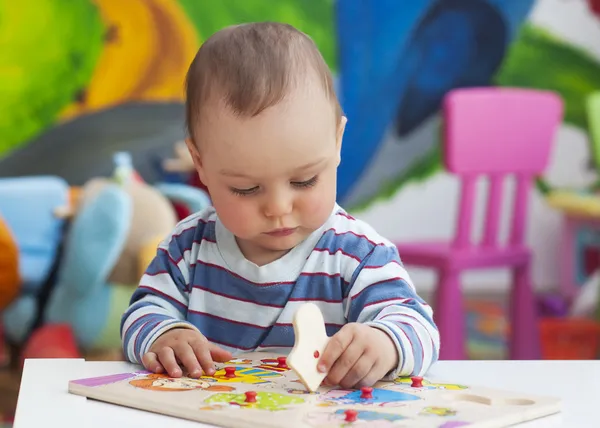

BIEVENUE A LA CRECHE LES P'TITS LOUPS
Nous accueillons les enfants de 3 mois à 3 ans dans un cadre chaleureux et sécurisé, idéal pour grandir et s’éveiller. Notre équipe, douce et attentive, accompagne chaque enfant à son rythme à travers des activités adaptées à son âge.
Ici, les tout-petits découvrent, jouent et partagent leurs premières expériences dans une ambiance joyeuse. Parents, nous sommes à vos côtés pour créer un environnement de confiance et de sérénité.
Les P'tits Loups, un lieu pour bien commencer !
Choisir la Crèche Idéale : Services et Activités Adaptées aux Bébés
Lorsque vous cherchez une crèche pour votre bébé, il est essentiel de bien vous renseigner sur les services proposés par l'établissement. Chaque crèche offre des activités adaptées à l'âge des enfants, en particulier pour les bébés. Les programmes peuvent inclure des jeux de développement psychomoteur qui favorisent la motricité fine et globale, des activités sensorielles pour stimuler les sens, ainsi que des moments dédiés à l'alimentation équilibrée. Assurez-vous également que les repas sont préparés avec des produits sains et adaptés aux besoins nutritionnels des nourrissons.
Démarches Administratives : Comment Obtenir une Place en Crèche
Les démarches administratives pour obtenir une place en crèche peuvent varier selon les communes. Il est important de connaître les critères d'admission, les délais d'inscription et les pièces justificatives nécessaires. Vous devrez souvent remplir une demande de pré-inscription et peut-être faire une visite de l'établissement avant l'admission. Cela vous permet d'évaluer la disponibilité des places, mais aussi de vous assurer que l'infrastructure et les services proposés correspondent à vos attentes. Si vous souhaitez nous contacter, il est possible de le faire via le boutton Contact sur le menu en haut de la page
Sécurité et Environnement : Évaluer les Conditions d’Accueil des Crèches
La qualité de l'environnement et la sécurité des locaux doivent être au cœur de votre réflexion. Il est recommandé de visiter la crèche pour observer les conditions d’accueil, vérifier la propreté des lieux, et voir si les équipements sont adaptés aux tout-petits. Les crèches doivent respecter des normes strictes en matière de sécurité, notamment sur les installations, les jouets, et la surveillance des enfants. En outre, pour vous aider dans votre démarche, des blogs ou des articles pour débutants sur l’adaptation à la crèche ou les soins quotidiens des nourrissons peuvent fournir des conseils précieux sur la manière de préparer votre bébé et vous-même à cette nouvelle étape.
Formulaire d'inscription :
Pour inscrire votre enfant a la creche Les P'tits Loupos vous devez nous contactez en indiquant le nombre d'enfants et vos coordonées, nous vous recontacterons pour prendre d'avantages d'information et finalisez votre demandes.
Télécharger la grille tarifaire